← 返回正文12.2 系统调用原理
PDF 第 411 页 · 书内第 388 页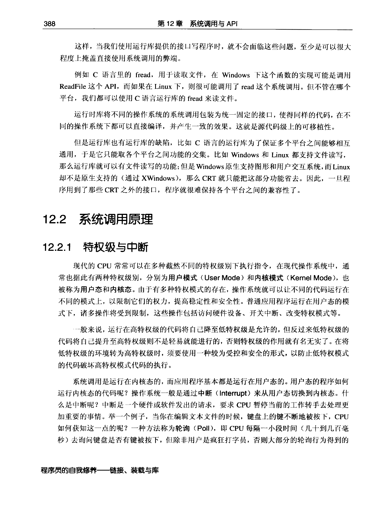
PDF 第 412 页 · 书内第 389 页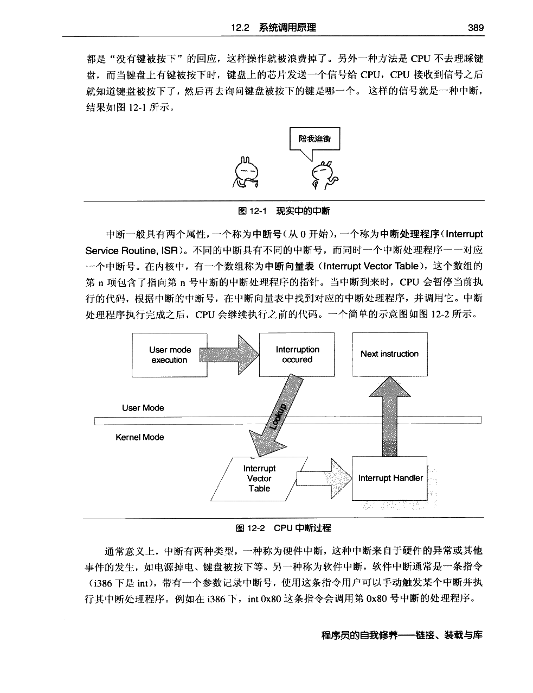
PDF 第 413 页 · 书内第 390 页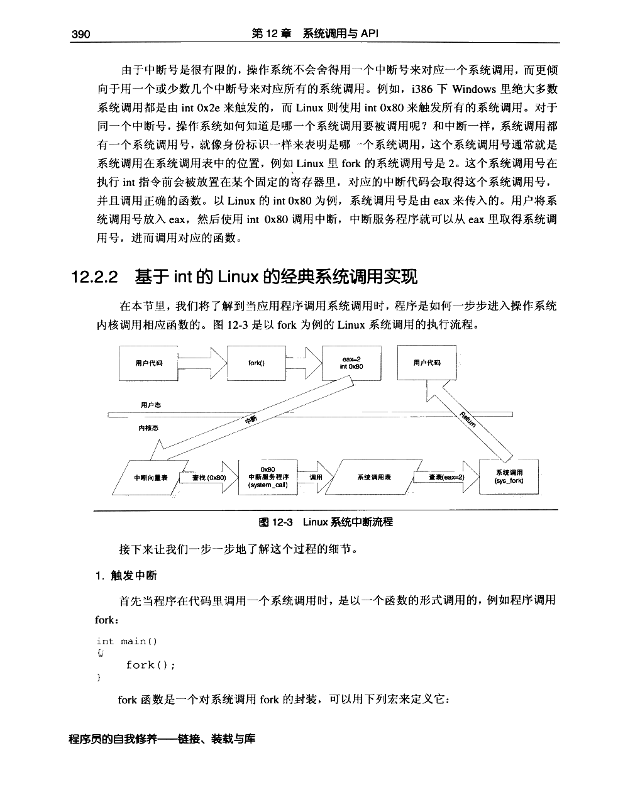
PDF 第 414 页 · 书内第 391 页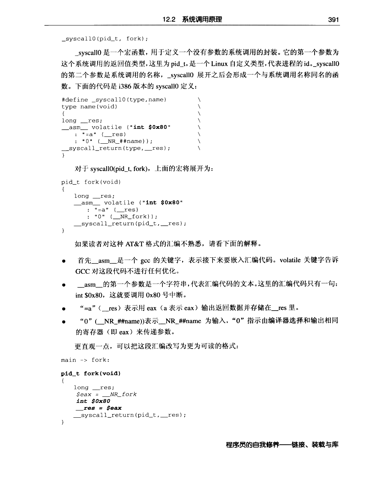
PDF 第 415 页 · 书内第 392 页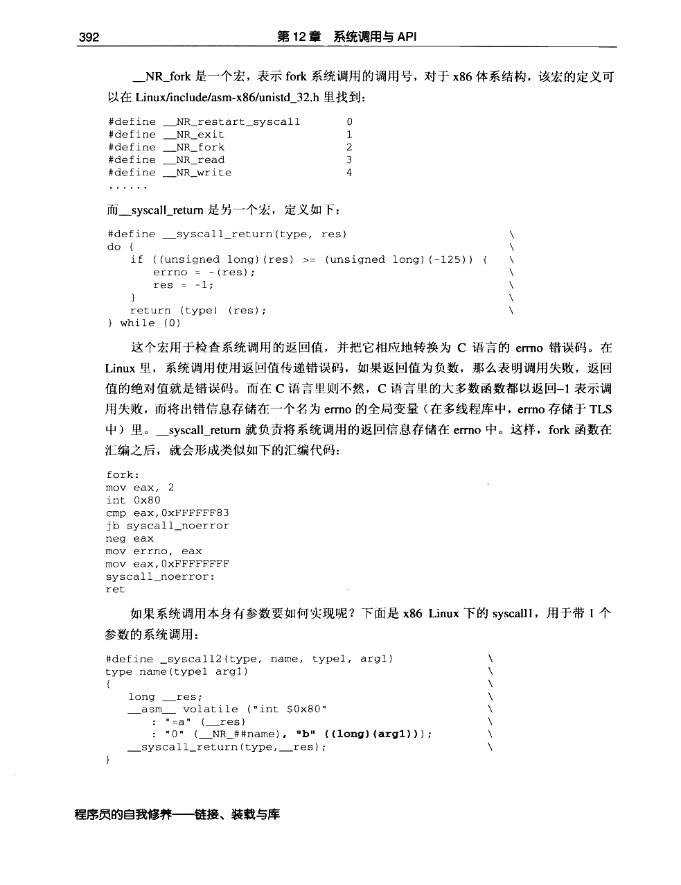
PDF 第 416 页 · 书内第 393 页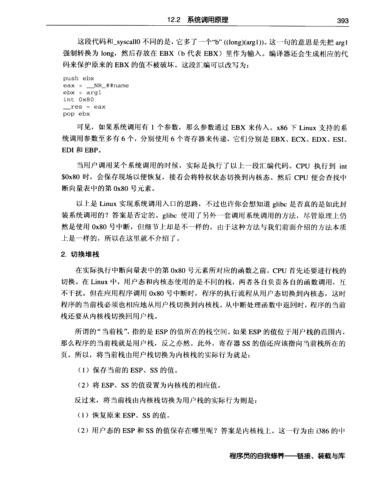
PDF 第 417 页 · 书内第 394 页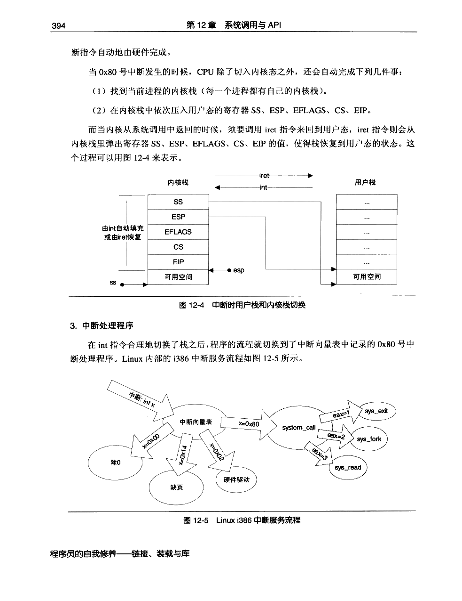
PDF 第 418 页 · 书内第 395 页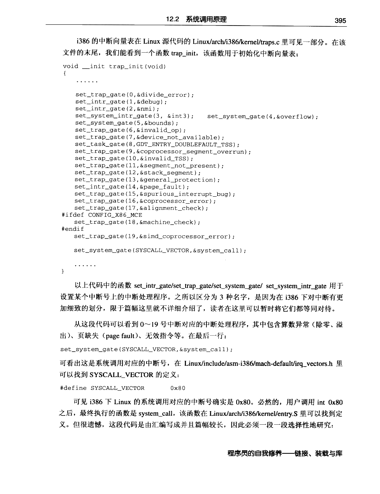
PDF 第 419 页 · 书内第 396 页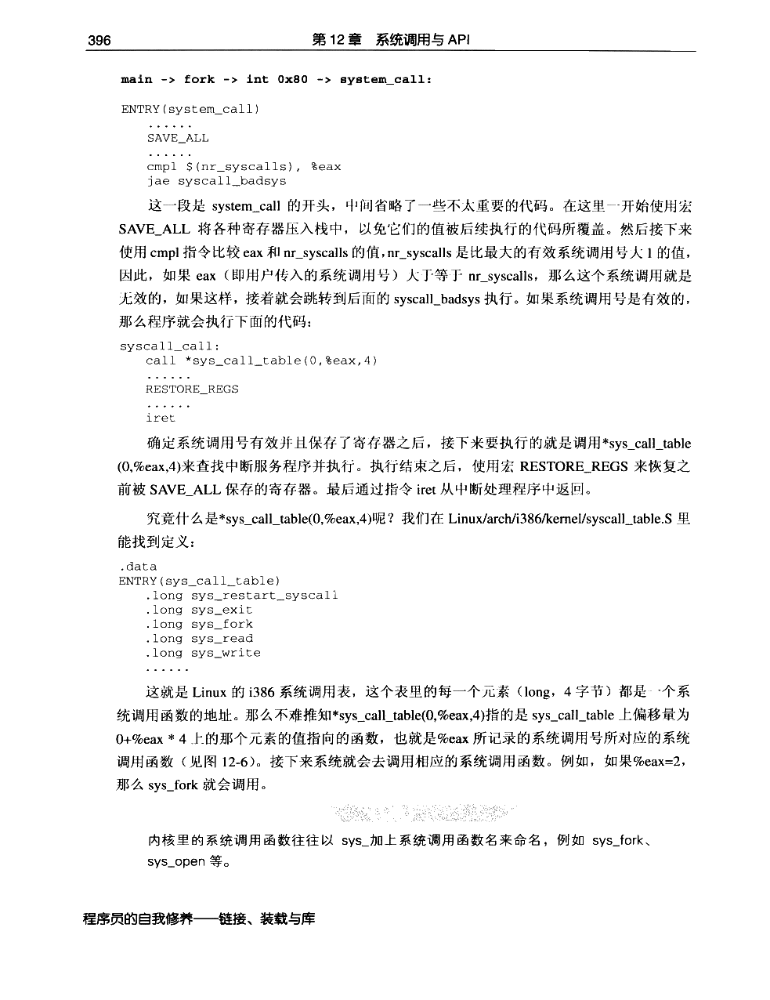
PDF 第 420 页 · 书内第 397 页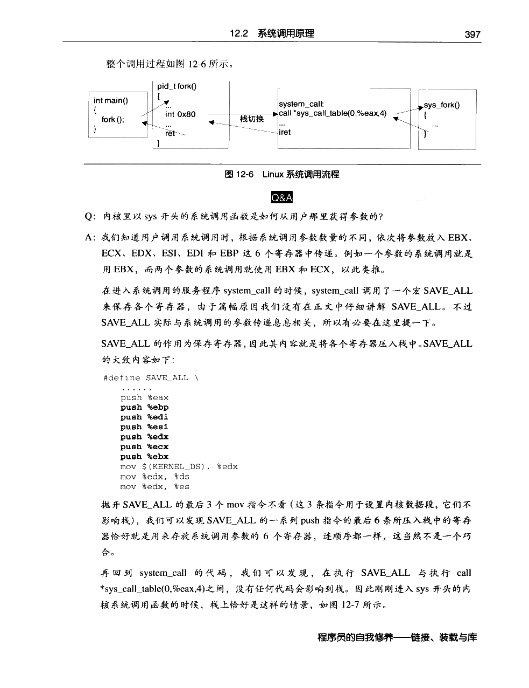
PDF 第 421 页 · 书内第 398 页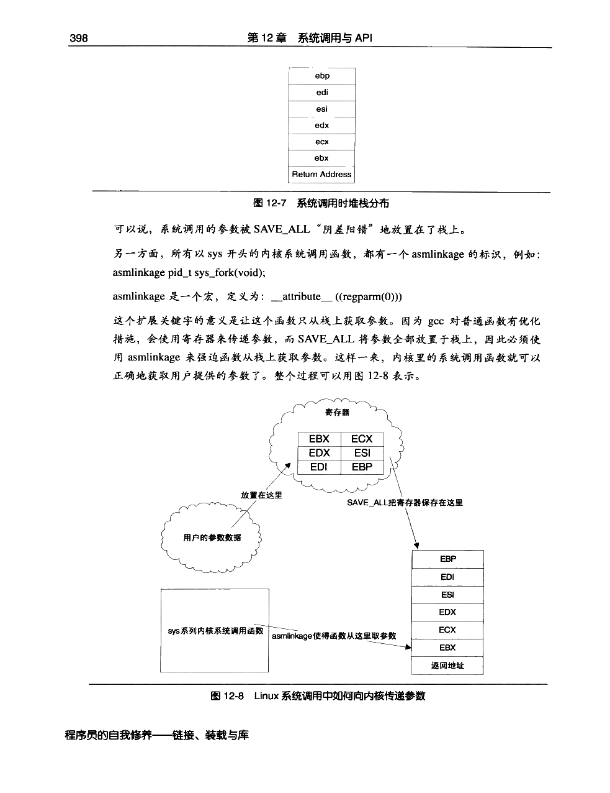
PDF 第 422 页 · 书内第 399 页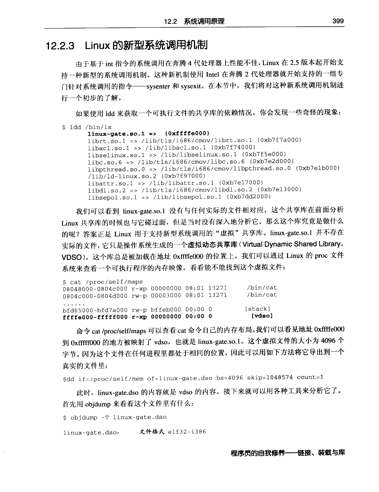
PDF 第 423 页 · 书内第 400 页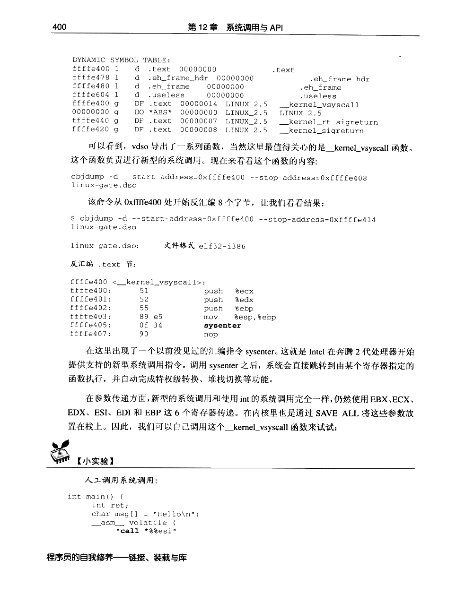
PDF 第 424 页 · 书内第 401 页